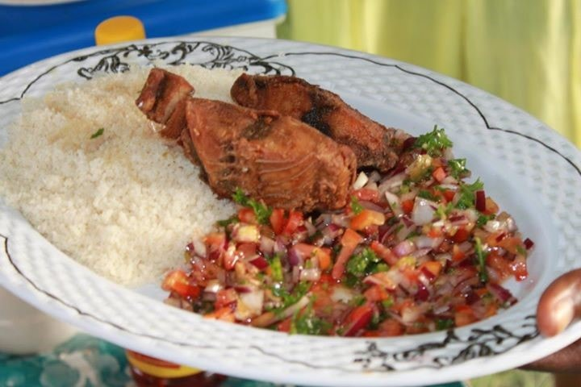

Garba Recipe

Description
Popular Ivorian meal, the Garba (otherwise named Attiéké and fish) is generally sold by men in small street stalls, called Garbadromes.
It consists of Attiéké (cassava semolina) and fried pieces of tuna with chopped onions, tomatoes and fresh peppers,
sprinkled with cooking oil and seasoning powder (Cube Maggi). Garba is the quick and cheap meal of choice for young people
of Abidjan. So every hour is good to eat it: consistent breakfast, lunch, dinner,...
Ingredients
- 1 Slice fresh tuna 300 g
- 1 Attiéké ball (cassava couscous, which is easily found in exotic grocery stores)
- 1 Small onion
- 1 African pepper (optional)
- seasoning powder (One small Cube Maggi)
- Oil, Salt and pepper
- 1 Large handful of flour
Cooking Steps
- Chop the pepper and reserve. Chop the onion and reserve.
- Crumble coarsely the attiéké in a steam basket to rehydrate. Prepare it like couscous.
- Add salt, pepper and flour to tuna and fry it five minutes on each side in hot oil.
- On a big plate, spread the attiéké , sprinkle it with 3-4 tablespoons of the cooking oil,
crumble the maggi cube over the entire surface of the dish, and mix well.
- Distribute the onion on top. Lay the fried fish on it.
- Submit chili apart.
- Distribute the onion on top. Lay the fried fish on it.
- And go! It’s even better when you eat it with your fingers!.
Recipe from Aissatou Gaye. All rights reserved. Original materials
here.